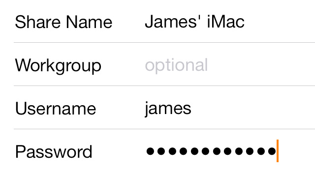

Infuse 装了两年多，我想说些当初不会说的话
从 iPhone 上的偶然发现到 Apple TV 的日常依赖，两年时间让我对这款播放器的看法翻了好几次。哪些习惯变了、哪些功能被高估、哪些坑是慢慢才暴露的。
我第一次从Infuse官网装它大概是两年前，在 iPhone 上想找个能直接打开 mkv 的播放器。那时候的需求很简单——别让我转码，别让我等。从下载拿完安装包打开视频就播，字幕自动挂好，觉得这软件还行，就搁在那儿了。
没想到后来 Apple TV 换了 4K，Infuse 就从"还行"变成了"开机就开它"。
当初没料到的变化
文件命名从瞎搞变成了仪式感。
刚用 Infuse 那阵子，视频文件想叫什么就叫什么——"片单1"、"下载(3)"、"最终版"，反正能播就行。直到某天扫进一个文件夹，十部电影只匹配出两部海报，剩下八部全是灰突突的文件图标。那感觉就像你精心准备了一柜子碟片，结果封皮全掉了。
后来才搞明白，Infuse 的 TMDB 匹配几乎完全靠文件名。试了几轮之后发现，加上年份的中英双标格式成功率能冲到 98%，加个 tmdb-ID 直接锁死。现在我整理新片先开 FileBot 跑一遍，命名成"中文标题 (年份) - 英文标题"的样子再拖进 NAS。这套流程已经成了条件反射，不这么做反而浑身不自在。
说个反直觉的：以前觉得海报匹配只是"好看一点"的事，现在发现它影响的是你翻库时的心情。灰文件一堆和一排带封面的缩略图，视觉冲击力差太多了。
哪些地方越用越顺手
Trakt 同步是我没想到会天天用的东西。
一开始连接 Trakt 只是顺手点了一下授权，觉得"看片记录记哪儿不是记"。结果后来 iPhone 上看了半集剧，切到 Apple TV 打开同一集直接续上，进度分毫不差——这体验把我之前所有关于"手动记时间点"的习惯全废掉了。
Trakt 免费版就能用，双向同步播放历史、看过标记、评分。配合 iCloud 同步连接信息和播放进度，跨设备续看几乎没有延迟。唯一的坑是直连 Plex/Emby 时观看历史先走服务器再到 Trakt，Infuse 不会从 Trakt 拉历史回来标记自己的库，所以想标记看过一定得在 Infuse 里操作，直接在 Trakt 网页上点是白搭。这个细节我踩了三次才记住。
杜比视界的硬件链路摸透之后，体验是断崖式提升。
最开始 Profile 8 的视频在我家那台老 Sony 电视上亮屏亮到瞎，以为是片源问题。后来翻了 Infuse文档 才知道，老款 HDR 电视只支持 Profile 5，Profile 8 是给 UHD 蓝光原盘设计的元数据。强制 Profile 5 之后画面立刻正常了——这个设置藏得不算深，但不遇到亮屏的人根本不会去翻。
全景声那条线也踩过同样的坑。TrueHD Atmos 音轨在 Apple TV 上会被降级成立体声，有画面没声音。解决方法是切 E-AC3 那条 Atmos 音轨，或者强制 LPCM 输出。Apple TV 系统级的音频格式一定要选"自动"，选了"杜比数字 5.1"只有光纤能传。这些设置项单个看都很简单，但组合起来就是一张密密麻麻的硬件适配图，光靠试错成本太高。
哪些地方越用越烦
FTP 服务每次开都是新地址新密码，记不住。
Infuse 自带的 FTP 服务是个好东西——Windows 电脑没法 AirDrop，传视频到 iPhone 全靠它。但每次开启 FTP，Infuse 会随机生成新的用户名和密码，而且关闭 App 或切后台一分钟后自动关掉。我电脑浏览器收藏夹里存过 ftp://192.168.1.5:2121 这个地址，结果下次开 iPhone 上的 FTP 服务，地址变了、密码也变了，白收藏。
AirDrop 其实更省心，但前提是你在 Apple 生态内。家里那台 Windows 笔记本只能老老实实开 FTP，每次还要凑到 iPhone 跟前抄地址密码，跟早年登学校宿舍 FTP 似的。
免费版的功能阉割在某些场景下会突然扎你一下。
我至今没买 Pro 订阅，主要是免费版日常够用。但杜比视界 Profile 5 & 8、全景声空间音频这些核心画质功能全是 Pro 独有的——当你已经摸清楚硬件链路能支持，但开不了那个开关的时候，那种"就差一步"的感觉挺微妙。还有 iCloud 同步连接信息，免费版是没有的，换设备得手动重新加 NAS 地址。
倒不是说 Pro 定价坑，而是 Infuse 的免费版和 Pro 版之间划的那条线刚好踩在"能跑但不丝滑"的位置上。你用免费版越久，就越能感受到那条线的存在。
哪个功能成了每天离不开的
NAS 直连 SMB 扫描。
可能因为我一直是 NAS 党，Infuse 的 SMB 直连是我每天打开它的理由——不用折腾 Plex/Emby 服务端，NAS 开个 SMB 共享就能直接扫库，海报、简介、分类全靠 Infuse 自己匹配。配合好的文件命名，打开就是一排带封面的缩略图，体验和 Netflix 原生界面没差多少。
之前试过一段时间 Plex，服务端更新、数据库损坏、转码瓶颈……维护成本太高了。Infuse 直连这套几乎零维护，NAS 挂那儿不管，Infuse 自己定时刷新。

哪个碰都没再碰
FTP 传输之外，其他本地导入方式基本闲置。
AirDrop 偶尔用，但大多数视频都在 NAS 上了。iTunes/Finder 同步自从 iOS 13 之后就没碰过——数据线传视频这种事，在 NAS 共享和 AirDrop 面前显得特别原始。USB 相机适配器那种场景更是难得有，一年用不了一次。
观感修正
当初觉得 Infuse 就是个"能播 mkv 的播放器"，现在得改一下了。它的定位其实是 Apple 生态内的影视库管理工具——播放器只是最表层的那个功能，底下是元数据匹配、跨设备同步、硬件链路适配、多种接入方式这一整套。低估了它在"库管理"上的用心程度，当初以为海报匹配是锦上添花，现在觉得那是整套体验的地基。
反过来，Pro 订阅的存在当初以为是"卖个高级功能"，现在觉得更像是 Infuse 的一种商业模式——免费版给你建立习惯的理由，Pro 版给你把体验拉满的选项。这个模式挺聪明的，我还在免费版晃着，但每次切到杜比视界亮屏然后强制 Profile 5 的时候，都会默默想起那个 Pro 的开关。
去留结论
我不会卸载 Infuse。Apple TV 上它是默认播放器，iPhone 上偶尔也用它看 NAS 里的剧。Trakt 同步已经接了，文件命名也跟着它的规则改了，迁移成本已经很高。
但有一个信号出现我会考虑换：如果 Infuse Pro 的订阅涨价到让我觉得"这个功能值不了这个价"，同时市面上出现一个能替代它做 NAS 直连 + Trakt 同步 + 基础杜比视界的免费/低价方案——那时候可能会走。
短期内看不到这个信号。Infuse 在 Apple TV 上的地位还是稳的，至少目前没有第二个播放器能把硬件链路挖得这么深、把元数据匹配做得这么细。两年用下来，它从"还行"变成了"离不开"，中间踩过的坑也全变成了经验。这种渐进式的渗透，可能就是好软件的本事。这套资料我也同步放到了 GitHub、Gitee 和 GitCode 三个仓库，方便国内访问和备份。